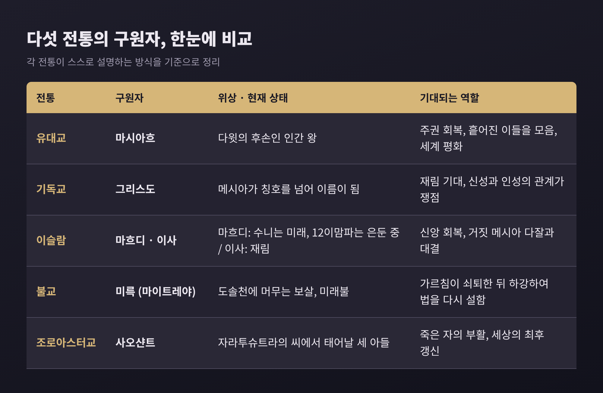

메시아 사상과 종말론 비교 — 다섯 전통은 구원자를 어떻게 그렸을까

3줄 요약
- 메시아는 "기름 부음 받은 자"라는 뜻의 낱말이며, 전통마다 인간 왕, 신적 존재, 숨은 지도자, 미래불 등 서로 다른 모습으로 나타납니다.
- 다만 "세상이 언젠가 바로잡힌다"는 기대의 뼈대는 닮아 있고, 종교학은 이 닮음과 차이를 비교의 눈으로 설명합니다.
- 이 글은 어느 믿음이 옳은지 가리지 않고, 각 전통이 스스로 말하는 바와 학계의 설명을 나란히 놓습니다.
오늘은 메시아 사상과 종말론을 비교해 보려 합니다. 유대교의 마시아흐, 기독교의 그리스도론, 이슬람의 마흐디와 이사, 불교의 미륵, 조로아스터교의 사오샨트를 차례로 살펴보겠습니다. 끝으로 천년왕국 운동을 종교학이 어떻게 설명해 왔는지 정리합니다.
■ 한 단어에서 갈라진 길, 메시아
메시아는 히브리어 마시아흐(mashiaḥ), 곧 "기름 부음을 받은 자"에서 왔습니다. 그리스어 신약성경은 이 말을 크리스토스(christos)로 옮겼고, 이것이 기독교에서 예수를 가리키는 칭호가 되었습니다.
여기서 먼저 짚을 점이 있습니다. 히브리 성경에서 마시아흐는 본래 이스라엘의 왕이나 대제사장을 뜻했습니다. 페르시아의 키루스 대왕조차 예루살렘 성전 재건을 허락했다는 이유로 이 이름으로 불립니다. 브리태니커는 히브리 성경이 미래의 종말론적 구원자를 가리켜 '메시아'라는 말을 쓰지 않는다고 설명합니다. 많은 현대 학자는 이를 왕권 이데올로기로 읽습니다. 현실의 왕들이 실망을 안기자 그 이상이 미래로 옮겨 갔다는 해석입니다.

■ 유대교: 다윗의 후손을 기다리는 마시아흐
전통적 믿음에서 마시아흐는 다윗의 후손입니다. 유대의 주권을 회복하고, 흩어진 이들을 모으며, 토라 준수를 되살리고, 세계에 평화를 가져오는 인물로 그려집니다. 이사야서의 "늑대가 어린 양과 함께 살고"라는 구절을 두고도 해석이 갈립니다. 마이모니데스는 은유로 읽었고, 한 세기 뒤 나흐마니데스는 문자 그대로 읽었습니다.
마이모니데스는 미슈나 주석에서 열세 가지 신앙 원칙을 정리했고, 열두 번째가 메시아 시대의 도래에 대한 믿음입니다. 이런 문장도 전해집니다.
제2성전기의 기대는 한 가지가 아니었습니다. 정치적 왕을 바라는 목소리도, 에녹1서처럼 천상의 "인자"를 그린 문헌도 있었고, 사해 사본에는 여러 칭호가 쓰입니다. 성전이 무너진 뒤의 전통에는 고난받는 '벤 요셉'과 왕적인 '벤 다윗'이라는 두 구원자의 암시도 나타납니다.
기대가 현실이 된 순간은 종종 비극으로 끝났습니다. 132년경 시작된 바르 코크바 항쟁은 로마에 맞선 끝에 처참히 패했고, 마이모니데스에 따르면 랍비 아키바가 그를 메시아로 인정했다가 그가 전사하자 동시대인들은 생각을 바꾸었습니다. 17세기에는 샤브타이 체비가 있었습니다. 1666년을 종말의 해로 본 예언 속에서 운동은 스미르나에서 베네치아, 암스테르담, 런던까지 퍼졌으나, 그가 술탄 앞에서 이슬람으로 개종하면서 다수가 환멸했습니다. 일부는 개종마저 메시아 성취의 한 단계로 해석했다는 점이 눈길을 끕니다.
오늘날의 유대교는 하나의 목소리가 아닙니다. 개혁 유대교는 개인 메시아 대신 인간의 노력으로 이룰 유토피아적 시대를 기대합니다. 정통파에서는 인격적 메시아에 대한 강조가 커졌고, 하바드 운동처럼 메시아의 임박을 강하게 말하는 흐름도 있습니다. 유대교가 예수를 메시아로 보지 않는 이유는 전통적으로 메시아적 사건이 그의 생애에 일어나지 않았다고 보기 때문이며, 사람을 숭배하는 일이 신의 유일성에 어긋난다고 보기 때문입니다.
■ 기독교: 메시아가 이름이 되기까지
기독교에서 "그리스도"는 점차 "예수 그리스도"라는 거의 성씨 같은 이름이 되었습니다. 예전에는 "그리스도 예수", 곧 "메시아이신 예수"라는 어순이 쓰였습니다. 초기에 가장 널리 쓰인 칭호는 그리스도가 아니라 "주(퀴리오스)"였습니다. 비유대인에게 더 쉽게 와닿았기 때문입니다.
브리태니커는 두 가지를 짚습니다. 첫째, 예수 시대의 유대인이 폭력으로 이스라엘을 구할 정치적 메시아를 기다렸다는 전통적 설명은 20세기 중반 이후 도전받아 훨씬 복잡한 그림으로 바뀌었습니다. 둘째, 기독교로 넘어오며 메시아의 유대 민족주의적 의미는 사라지고 다윗의 아들과 인자 모티프가 정치적으로 중립적인 개념으로 합쳐졌습니다.
이후 논의의 중심은 "이 구원자는 어떤 존재인가"로 옮겨 갔습니다. 신이 인간이 되었다는 흐름, 선택받아 입양되었다는 양자설, 육신은 겉모습일 뿐이라는 가현설이 맞섰고, 325년 니케아 공의회는 성부와 성자의 관계를, 451년 칼케돈 공의회는 그리스도의 본성을 다루었습니다. 이 결론을 두고 전통적 관점은 정통이 일탈을 이긴 과정으로 봅니다. 반면 오늘날 학계에 널리 퍼진 관점은 다양한 입장이 저마다 성서적 근거를 가졌고 결과에는 역사적 우연이 컸다고 봅니다. 두 공의회가 모든 교회에 받아들여진 것은 아니라는 점도 함께 기억해 둘 만합니다.
■ 이슬람: 마흐디와 이사, 두 갈래의 기다림
브리태니커에 따르면 이슬람에는 구원자-메시아가 따로 없고, 신앙을 회복할 종말론적 갱신자 마흐디("바르게 인도된 자")가 있습니다. 이 교리는 시아파 신조에서 핵심입니다. 마흐디라는 낱말은 꾸란에 나오지 않고, 전승은 아부 다우드와 티르미디 같은 하디스집에 실려 있습니다. 부하리와 무슬림의 집성에는 없다는 점도 기록해 둘 만합니다.
수니파는 마흐디를 아직 오지 않은 미래의 인물로 봅니다. 12이맘파 시아는 열두 번째 이맘이 874년 아버지의 사후 은둔에 들어갔다고 믿습니다. 874년부터 941년까지는 네 명의 대리인이 소통한 소은둔, 그 이후 현재까지는 대은둔입니다. 같은 낱말이 한쪽에서는 '앞으로 올 사람', 다른 쪽에서는 '이미 태어나 숨어 있는 사람'을 가리키는 셈입니다. 이븐 할둔처럼 마흐디가 따로 필요 없고 예수가 그 역할을 한다고 본 수니 학자도 있었습니다.
여기에 이사(예수)가 겹칩니다. 꾸란은 그를 알마시흐, 곧 메시아라 부릅니다. 하디스는 그가 다마스쿠스 동쪽의 흰 탑 근처로 내려와 거짓 메시아 다잘을 물리친다고 전합니다. 마흐디와 이사가 함께 나타나 이사가 마흐디 곁에서 기도한다는 전승도 있습니다. 다만 이사의 하강 전승 가운데 일부가 초기 압바스 내전기에 뒤늦게 보태졌을 가능성이 제기되어 왔고, 전승의 위상은 학파마다 평가가 다릅니다.
■ 불교와 조로아스터교: 먼 미래에서 오는 구원자
불교의 미륵(마이트레야)은 현재 도솔천에 머무는 보살로, 석가모니의 가르침이 완전히 쇠퇴한 뒤 지상에 내려와 법을 다시 설할 미래불입니다. 이름은 산스크리트 '마이트리', 곧 자애에서 왔습니다. 3세기 경전에 언급되고 4~7세기에 숭배가 특히 성했으며, 모든 불교 부파가 그를 받아들입니다. 팔리 경전은 인간 수명이 약 8만 년에 이를 때 태어난다고 전합니다. 성불까지 걸리는 시간을 수십억 년 단위로 계산하는 전승도 있으나, 이 수치는 전통마다 다르게 전해집니다.
미륵은 신앙에 그치지 않고 역사를 흔들었습니다. 690년 측천무후는 스스로 미륵의 화신임을 내세웠고, 10세기 한국의 궁예도 살아 있는 미륵을 자처했습니다. 브리태니커는 불교를 비기독교 전통 가운데 가장 강력한 천년왕국 전통으로 꼽습니다. 백련교 같은 비밀결사를 낳았고, 그런 운동이 14세기 원나라를 무너뜨리는 데 기여했다고 설명합니다.
조로아스터교의 사오샨트는 가장 정교한 시간표를 가집니다. 후대 팔라비어 문헌 『분다히슈』에 따르면 자라투슈트라의 씨가 호수에 보존되어 있다가 세 아들이 차례로 태어나는데, 마지막 소샨스가 부활과 최후의 갱신인 프라셔기르드를 이끕니다. 눈여겨볼 대목은 어원입니다. 이란학 자료는 '사오샨트'를 "구원자"로 옮기는 것이 기독교적 연상이 강하다고 비판하며, "이로움을 주는 자"나 "조력자" 같은 번역을 제안합니다. 번역어 하나에도 비교의 함정이 숨어 있는 셈입니다.
한편 학계는 조로아스터교가 유대교·기독교·이슬람에 영향을 주었을 가능성을 거론합니다. 미륵을 미트라나 사오샨트와 연결하려던 학자들도 있었습니다. 그러나 이 연결을 직접적이라 보기는 어렵다는 반론이 있어, 지금은 "영향의 가능성" 정도로 조심스럽게 다룹니다.
■ 천년왕국 운동, 종교학은 어떻게 설명할까
천년왕국주의(millennialism)는 요한계시록 20장의 천 년 통치에서 출발한 말입니다. 그리스도의 재림과 천년왕국의 선후관계를 두고 전천년설, 후천년설, 무천년설이 갈립니다. 아우구스티누스는 처음 전천년설을 받아들였다가 무천년설로 옮겨 갔다고 전해집니다. 이후 개념은 종교를 넘어 확장되었습니다. 브리태니커는 프랑스 혁명, 사회주의, 나치즘을 세속적 천년왕국 운동의 사례로 언급합니다.
종교학은 이 현상을 몇 가지 렌즈로 설명합니다.
- 인류학과 역사학의 출발점. 2차 대전 이후 화물 숭배를 연구한 인류학자들이 분야를 열었고, 중세학자 노먼 콘이 『천년왕국의 추구』(1957)로 이를 발전시켰습니다. 콘이 이를 비합리적 일탈로 본 데 대해 기 드보르는 오히려 초기 근대의 혁명 경향이라고 반박했습니다.
- 상대적 박탈. 절대적 가난이 아니라 기대와 현실의 격차에서 오는 불만이 운동의 동력이라는 틀입니다. 다만 같은 불만을 가진 사람 모두가 가담하지는 않는다는 한계가 따릅니다.
- 식민지의 맥락. 19세기 북미 유령춤, 태평양 화물 숭배, 의화단처럼 외부 권력에 눌린 사회에서 임박한 변혁의 서사가 거듭 나타났습니다.
- 인지부조화. 레온 페스팅거는 『예언이 끝났을 때』(1956)에서 1954년 12월 21일 대홍수를 예언한 소규모 집단을 관찰했습니다. 날짜가 지나자 집단은 "우리의 긍정적 힘이 재앙을 막았다"고 해석하고 오히려 포교에 나섰다고 합니다. 단일 사례에 가깝고 연구 윤리도 문제 삼아져 왔기에, 이 해석을 일반 법칙으로 받아들이기는 조심스럽습니다.
1844년 밀러파의 경험도 비슷한 결을 보입니다. 윌리엄 밀러는 다니엘서의 2,300일을 2,300년으로 읽고 기원전 457년부터 계산해 재림 시점을 1843~1844년으로 보았습니다. 날짜가 연이어 지나갔으나 반응은 하나로 모이지 않았습니다. 계속 기다린 이도, 새 날짜를 정한 이도, 신앙을 접은 이도 있었고, 성소가 하늘에 있다는 재해석을 따른 이들은 훗날 제칠일안식일예수재림교로 이어졌습니다.
■ 비교가 보여 주는 것
세 가지를 짚어 보겠습니다. 첫째, 구원자의 위상은 제각각입니다. 인간 왕(유대교), 신성과 인성의 문제(기독교), 숨은 지도자와 재림하는 예언자(이슬람), 보살에서 미래불(불교), 시간표 속 세 아들(조로아스터교)로 나뉩니다. 둘째, 기대의 구조는 닮았습니다. 현재가 부당하다는 인식, 그것을 바로잡을 존재와 시점, 그리고 신자에게 약속된 갱신입니다. 셋째, 예언이 어긋났을 때의 반응도 비슷한 스펙트럼을 보입니다. 환멸, 재해석, 더 깊은 헌신이 모두 나타났습니다.
한계도 분명합니다. 다섯 전통을 한 틀에 묶는 일은 자칫 서로 다른 신앙의 고유한 의미를 지워 버릴 수 있습니다. 브리태니커 역시 비기독교 운동을 '메시아적'이라 부르는 것이 늘 적절하지는 않다고 덧붙입니다. 비교는 닮음을 찾는 작업이면서 차이를 정확히 보는 작업이어야 합니다.
정리하면 이렇습니다. 종교학이 보여 주는 것은 어느 구원자가 참인가가 아니라, 인간이 시간의 끝에 어떤 질문을 걸어 왔는가입니다.
"구원자의 얼굴은 달라도, 기다림의 문법은 닮아 있습니다."
이 비교가 여러분에게 무엇을 남겼느냐고 물으신다면, 저는 서로 다른 기다림을 이해하려는 태도 자체라고 답하겠습니다.